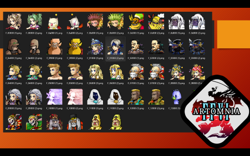
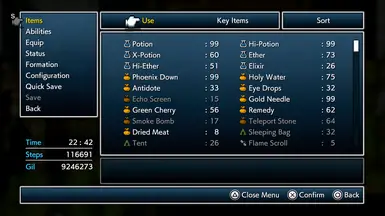

Special Projects & Flagship Suites.
While individual mod releases address specific game mechanics or visual tweaks, these Flagship Projects represent multi-month architectural undertakings. From the complete modular Kupo Mods Library for Final Fantasy IX to the celebrated Project Kyaro PSX texture overhaul, explore the dedicated hubs below.
 Click to Zoom 🔍
Click to Zoom 🔍
Kupo Mods Library
The master enhancement suite for Final Fantasy IX on PC. Formerly known as Mog Add-ons and detailed in Nexus Article #12, the Kupo Library provides a modular, cohesive experience spanning complete UI overhauls, 6 controller button presets (DualSense, DS4, Xbox, SNES, and Pixel), Extended Cast portraits, quality-of-life adjustments, and the Kupo Heroes Pack character balance overhaul.
- Kupo UI Suite: 8 dialogue box colorways, 3 custom title loops, high-contrast menus, and reduced world map mist.
- Kupo Heroes Pack: In-depth character reworks including Freya 3x High Jump, Vivi & Steiner multi-element Aero/Quake/Water magic, Steiner Save the Queen, Beatrix Paladin integration, and Quina chef buffs.
- Modular Freedom: Pick and choose individual components or run the entire suite together via the Memoria launcher.
 Click to Zoom 🔍
Click to Zoom 🔍
Project Kyaro (PSX)
A landmark visual enhancement and texture restoration project for Konami's timeless PSX masterpiece, Suikoden II. Combining xBR filtering and hardware texture replacement backends on Beetle PSX HW and RetroArch, Project Kyaro eliminates pixel artifacting on modern displays while providing pixel purists the option to run crisp Nearest Neighbor filtering.
- 161 Character Portraits: Sharp high-resolution facial portraits with custom outlines across the 108 Stars of Destiny, plus Pilika, Neclord, Jowy, and Julia.
- Internationalization & Art: Accented text support, war battle typography, ending backgrounds, and rune transparency fixes.
- Curated Cheat Database: Includes 80+ essential GameShark and Action Replay hex codes for stats, runes, and strategic war battle advantages.

Click to Zoom 🔍Dissidia Opera Omnia Style Portraits Collection
A unified high-definition character portrait initiative replacing low-resolution or mismatched character busts with the expressive, vibrantly shaded art style of Dissidia Final Fantasy: Opera Omnia. Spanning the entire playable cast and guest characters across multiple classic Square Enix RPG remasters.
- Final Fantasy VI & PR: Complete party coverage (Terra, Locke, Celes, Edgar, Sabin, Shadow, Cyan, Gau, Setzer, Relm, Strago, Mog, Umaro, Gogo).
- Chrono Cross: The Radical Dreamers Edition: Over 40+ party member portraits overhauled with high-contrast outlines and stylized shading.
- Seamless Frame Integration: Tailored alpha channels and canvas dimensions matching vanilla dialogue box viewports.

Click to Zoom 🔍Darker UI & Sane UI Series
A comprehensive visual overhaul series addressing the overly bright, washed-out blue windows in the default Square Enix Pixel Remaster releases. Darker UI introduces deep charcoal frames, rich gradients, refined window chrome, and subtle metallic borders that drastically reduce eye strain while honoring the classic dark CRT look.
- Full Series Coverage: Dedicated releases tailored for Final Fantasy I, II, III, IV, V, and VI Pixel Remasters, plus FFVIII Remastered.
- High-Contrast Readability: Retains crisp white font legibility with zero color banding or compressed alpha artifacts.